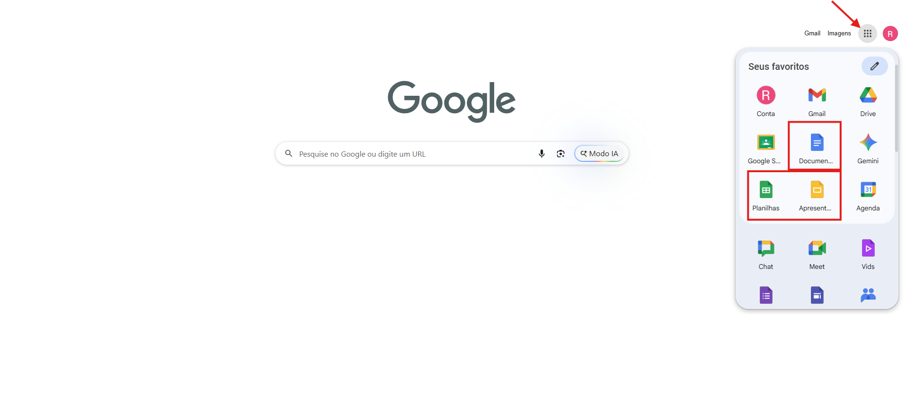

O pacote Office não funciona
Página de solução — Programas e sistemas
Links rápidos
Como resolver
- Verificar se o Microsoft Word, Excel ou PowerPoint apresenta erro de licença, ativação ou não abre corretamente.
- Caso o computador não possua licença do Microsoft Office, orientar o aluno a usar as ferramentas do Google Docs.
- Solicitar que o aluno acesse o Gmail institucional do SENAI.
- No Google Chrome, clicar no ícone de aplicativos do Google, no canto superior direito da tela.
- Escolher Documentos, Planilhas ou Apresentações, conforme a atividade solicitada.
- Também é possível acessar diretamente pelos links rápidos disponíveis nesta página.
- Realizar a atividade nas ferramentas do Google, que funcionam em nuvem e atendem à maioria das necessidades da aula.
Observações
- Nem todos os computadores possuem licença ativa do Microsoft Office.
- O uso do Google Docs é a alternativa recomendada para a maioria das atividades.
- Todos os alunos possuem Gmail institucional do SENAI.
- Como os serviços do Google rodam em nuvem, não dependem da instalação local do pacote Office.
- Na tela inicial do Google, o aluno pode clicar no ícone de aplicativos no canto superior direito e escolher Documentos, Planilhas ou Apresentações.
Ilustração do processo
Use as imagens abaixo como referência visual. Elas estão organizadas na ordem do procedimento.

Na página inicial do Google, clique no ícone de aplicativos no canto superior direito e escolha Documentos, Planilhas ou Apresentações.
Quando chamar suporte
Acionar suporte apenas se a atividade exigir obrigatoriamente o Microsoft Office instalado ou se o acesso ao Gmail institucional/Google Docs também não funcionar.
Dica: se o problema continuar, anote o equipamento, a sala, o horário e tire uma foto da mensagem exibida na tela.